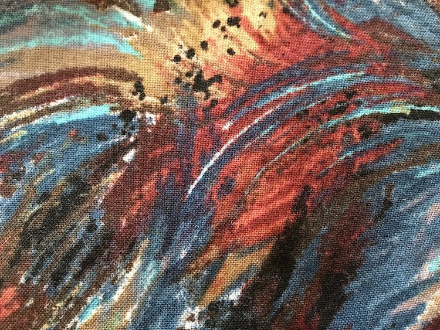

Painted Feathers
Almost gone!
Star Wars
Almost gone!


My wax wraps are made from beeswax, jojoba oil, pine resin, and cotton fabric. Every wax wrap is 10 inches by 10 inches.
All wax wraps are $7; fabric choices are below. Please email me to place your order.
Almost gone!
Almost gone!